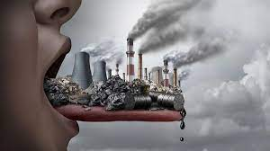

El planeta,es el lugar en el que todos vivimos,pero del mismo modo es un lugar que parece que al ser humano no nos importa cuidarlo ya que con el paso de los años,la contaminacion es un tema que se a dejado por un lado,aunque cada vez parece que se recuerda mas.
Una de las cosas que mas nos afecta que hacemos,es el tirar la basura ya que debido a los materiales con los que estan hechaz muchas cosas,son materiales que el planeta tarda mucho en desintegrarse y genera mucho daño en la capa de ozono.
Contaminacion por humo.
10 principales causas
01/12/21
10 principales causas
Uso excesivo de automóviles y otros medios de transporte impulsados por gasolina o diésel.
liberación de plásticos y objetos no biodegradables en espacios naturales.
Producción y acumulación de basura
Extracción, procesamiento y refinamiento de combustibles fósiles (petróleo, carbón y gas natural)
Combustibles fósiles
Desechos industriales y domésticos
Productos químicos y pesticidas
desforestacion
El desarrollo industrial.
actividad humana

contaminacion.
La contaminacion ambiental
16/02/22
¿Que es la contaminacion ambiental?:Aula 365
La Contaminación ambiental es algo que se ha puesto de”moda”,por llamarlo de alguna forma, últimamente pero en realidad esto es algo con lo que llevamos lidiando en el planeta
por muchos años,en este video nos plantean este problema de una forma muy sencilla la cual es una maestra que les está enseñando a sus alumnos,con ejemplos muy claros y
despues de eso nos plantean como simples cambios que podemos tener cada quien en nuestras casas, aportando nuestro granito de arena, pueden ayudar a mejorar esto,como puede ser tirando la basura en donde va o no quemando las hojas secas de una planta, si
no guardandolas en una bolsa y tirarlas donde van,que este último es el ejemplo que nos plantea el video.
De lo que trata este video es muy interesante y muy bueno, ya que gracias a este tipo de información podemos comprender más fácil la importancia que tiene este tema,por que
cuando pensamos en contaminación pensamos en las grandes fábricas,los desechos en los ríos y mares,en los automóviles,etc pero no pensamos en que esto es algo en lo que todos
influimos y perjudicamos al planeta y este tipo de videos nos dan un golpe en la realidad el cual nos hace concientizar acerca de este tema el cual si seguimos al paso en el que vamos
y no hacemos nada para cambiarlo vamos a terminar con la vida del planeta en el que vivimos.
Mi opinión en el Tema
2/05/22
Mi opinión como Estudiante
Por desgracia a todos nos toco vivir en una epoca en la cual la contaminacion es algo que esta
muy presente en nuestras vidas y es un verdadero problema porque es algo que si no hacemos nada al respecto
nos veremos perjudicados todos y todo el planeta.
La contaminacion es algo que todos podemos cambiar ya que es de las pocas cosas que haciendo cada quien la parte
que nos toca se puede cambiar el rumbo del planeta,con que cada quien haga un cambio en su estilo de vida,un pequeño cambio,
sera suficiente para que salvemos al planeta.
investigación
16/02/22
Contaminación en México
México no es un país el cual tenga una cultura de reciclaje muy presente, como lo pueden llegar
a tener Suiza o Austria,ya que durante el año 2021 se le otorgó un muy bajo presupuesto al sector ambiental.
Desde que comenzó el actual sexenio, el sector ambiental ha sido uno de los más castigados. En 2021,
se destinaron 31 348 millones de pesos para todo el sector1lo cual ha generado un desbalance
muy grande en el sector ambiental del país. gracias a esto la red de Jóvenes Ambientalistas calcula que
por cada peso que se deja de invertir en áreas naturales protegidas se pierden entre 100 y 400 metros
cuadrados de cobertura forestal.2lo cual nos da a entender que con los millones de pesos que
se deja de invertir genera una desatención muy grande para todos los sectores ambientales del país.
Como podemos ver, para el gobierno la contaminación pareciera no importarle pero,¿ocurre lo mismo con la población?
,pues la respuesta es no pues se calcula que:En el país existen 363 empresas dedicadas al reciclado de productos,
16 por ciento catalogadas como plantas grandes por su número de trabajadores y 23 por ciento pequeñas,3
lo que nos demuestra que a los ciudadanos les importa más la contaminación y el cuidado del medio ambiente que al gobierno
en sí,una gran parte del material que se acopia ,el 38%, proviene de empresas,de centros de acopio mientras que 27% proviene
de centros de acopio.
Educación sobre la Contaminación
La educación sobre el tema de la contaminación está muy presente en méxico ya queen las escuelas es en donde los mexicanos
más nos informamos acerca de estos temas,el 64.8% de los estudiantes mexicanos reciben información sobre educación ambiental en el
salón de clases, siendo este el principal medio. Por otra parte, un 39.86% de dicha información proviene de los medios de comunicación
tales como:televisión, radio, periódicos o revistas,un 20% lo aprenden con amigos, un 12% con su familia y por último cerca de un 9% lo
aprenden en internet y en libros.4
Educacion sobre la contaminacion
Cómo lo podemos ver en el párrafo anterior la contaminación es algo que se implementa cada vez más en la sociedad y esto genera un cambio
muy grande acerca de la contaminación atmosférica,un cambio para bien, ya que se está rompiendo una cadena de malos hábitos.Al enseñar de
forma tan presente en las escuelas este tema va a generar poco a poco un conocimiento más grande, el cual va a ayudar que en un futuro,
existan grandes mexicanos que se dediquen al mundo del reciclaje y de las energías renovables, lo cual cada vez más está pasando con más
frecuencia.
Formas de Ahorrar Energia
Una de las formas más fáciles y más comunes de ayudar a prevenir la contaminación son las energías renovables,Se le denomina energía
renovable a la energía que se obtiene a partir de fuentes naturales virtualmente inagotables, ya sea por la inmensa cantidad de energía
que contienen, o porque son capaces de regenerarse por medios naturales.5Como podemos ver las energías renovables nos
ayudan a cuidar el ambiente,estas vienen de la naturaleza y pueden venir en muchas formas,por lo general con estas se genera
energía/electricidad.
Existen distintos tipos de energías renovables pero los más comunes son: la energía eólica,esta conciste en aprovechar las rafagas de viento
utilizando molinos de viento,para con este generar electricidad.Energía solar fotovoltaica,esta se aprovecha utilizando paneles solares y
aprovechando la radiación solar para convertirla en electricidad con ayuda de los paneles antes mencionados.Energía termosolar,está de la misma
manera que la energía solar fotovoltaica también utiliza la energía del sol,esta genera vapor con el cual posteriormente genera electricidad, esto
lo logra concentrando la radiación del sol en unos espejos con los cuales calienta un fluido y posteriormente se genera el vapor antes mencionado.
Energía hidráulica esta genera electricidad a partir del movimiento del agua.Biomasa esta genera energía a partir de residuos orgánicos.
1 y 2 Las deudas ambientales de México en 2021: debilitamiento del
sector ambiental, avance de tala ilegal y violencia contra defensores (mongabay.com)
3La Jornada - En 2021, México recicló más de 1 millón de toneladas
de plástico: Anipac
464.8% de la educación ambiental en México se imparte en escuelas - OECD
Energías renovables más utilizadas, ¿cuáles son? (montegar.es)
Mi Video
19/02/22
Video Informativo
En el siguiente video, trate de dar una explicación más a detalle sobre el tema,La Contaminacion.
La contaminacion/Emilio Ibáñez
Meme
19/02/22
Un contenido menos serio
siempre que hablamos por mucho tiempo de algo serio,es bueno distraernos un rato para poder reirnos
 contaminacion
contaminacion
 10 principales causas
10 principales causas Mi opinión en el Tema
Mi opinión en el Tema investigación
investigación Mi Video
Mi Video Sitios oficiales para mas informacion
Sitios oficiales para mas informacion